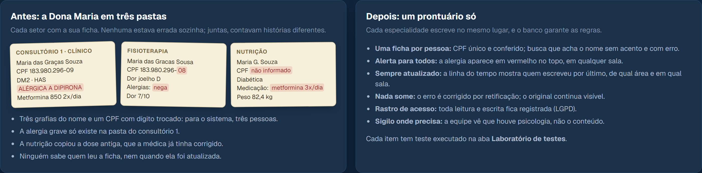
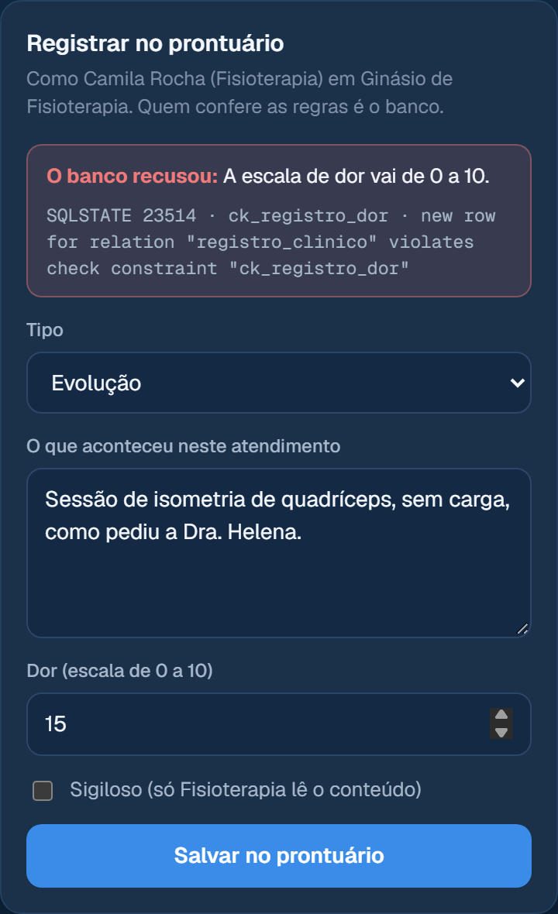
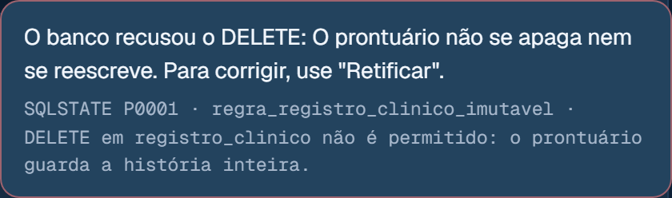
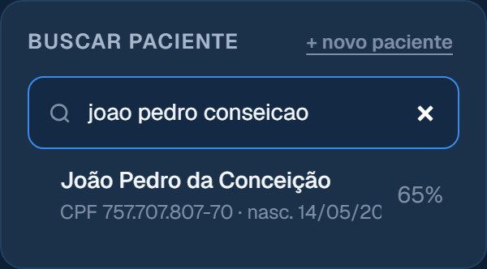
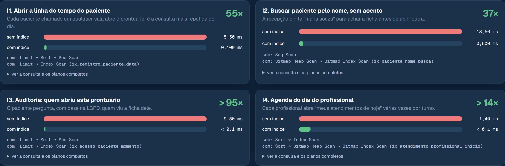
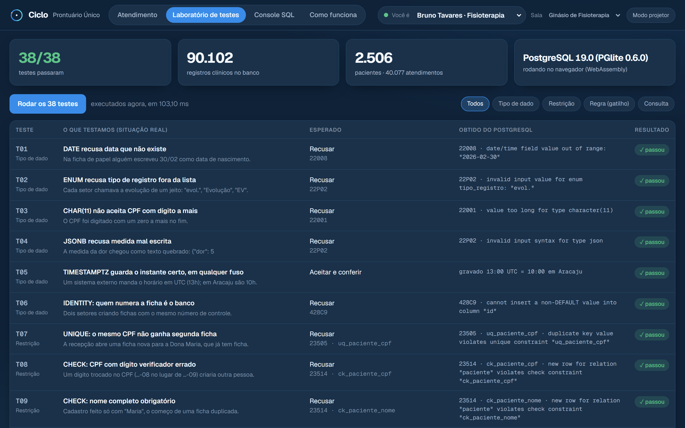

Tour do projeto · para estudar antes das 15h10
Tudo o que foi feito, parada por parada
Cada parada mostra a tela de verdade, explica o que é, onde está o arquivo, como funciona por dentro e qual teste prova. Os botões abrem o sistema e os slides de verdade.
banco/, um arquivo por assunto
A PROVA38 testes + 4 índicesRodam no terminal e no sistema; o resultado vira JSON
A DEMONSTRAÇÃOO sistemaO PostgreSQL roda dentro do navegador, no ar e no notebook
A ENTREGAO artigoModelo SBC da UNIT, gerado a partir do resultado dos testes
OS 10 MINUTOSA apresentação16 slides no motor de sempre, com plano B e plano C
O ACOMPANHAMENTOO GitHub16 histórias; a história só fecha quando o teste passa
banco/*.sql→testes no terminal→resultados .json→
artigo gerado+histórias fechadas no GitHub
Os mesmos arquivos SQL montam o banco do sistema no navegador. Por isso o que o professor vê na tela é exatamente o que foi testado.
Parada 1
O problema: a Dona Maria em três fichas
Numa clínica com várias especialidades, a ficha fica na sala de quem atendeu por último, e cada setor guarda a sua versão do paciente. O tema que vocês receberam ("prontuário espalhado") é isso.

Aba "Como funciona" do sistema.
A história (fictícia, mas típica)
- A médica anota a alergia grave a dipirona no consultório 1.
- De manhã ela pede para a fisio tirar a carga do joelho.
- À tarde, a fisio atende com a ficha do próprio setor: sem a alergia e sem a mudança.
- A nutrição copiou a dose antiga do remédio.
- O CPF foi anotado com um dígito trocado: para qualquer cadastro, são três pessoas.
As 4 causas, e a regra que resolve cada uma
- Ficha presa na sala → uma tabela de registros para todas as áreas
- Segunda ficha da mesma pessoa → CPF único e conferido + busca tolerante
- Corrigir apagando → nada se apaga, existe a retificação
- Ninguém sabe quem leu → auditoria de toda leitura e escrita
Parada 2
O banco por dentro: 8 tabelas
A decisão central: uma tabela só (registro_clinico) para o que todas as especialidades escrevem. O que é comum vira coluna; o que muda por área (dor, peso, pressão) vai numa coluna JSONB chamada medidas.

| Tabela | Para que serve |
|---|---|
paciente | Uma ficha por pessoa. CPF único e com dígito conferido. |
profissional e especialidade | Quem atende, com o registro no conselho (CRM, COREN, CREFITO, CRN, CRP). |
atendimento | O encontro: paciente, profissional, sala, horário e situação. A sala virou só um dado. |
registro_clinico | Tudo o que foi escrito no prontuário, de todas as áreas. Nunca se altera nem se apaga. |
alergia e condicao | O que aparece no topo para todo mundo: alergias e problemas de saúde (CID-10). |
acesso_prontuario | A auditoria: quem leu ou escreveu, e quando (LGPD). |
Onde está
banco/01_tipos.sqltipos ·02_funcoes.sqlvalidação do CPF ·03_tabelas.sqltabelas e restrições04_gatilhos.sqlregras ·05_indices.sqlíndices ·06_visoes.sqlleitura (linha do tempo, busca, resumo)07_dados_demo.sqla clínica e os 6 pacientes com história ·08_volume.sqltrês anos de dados sintéticos
Por que PostgreSQL rodando no navegador?
- É o PGlite: o PostgreSQL 19 de verdade, compilado para WebAssembly. Roda no Node (testes) e no navegador (sistema) sem instalar nada.
- Assim os mesmos arquivos .sql servem para testar e para demonstrar. A própria Ciclo já usa o PGlite nos testes dela.
Parada 3
Tipos de dados: cada um com motivo e teste
| Tipo | Situação real que ele evita | Teste |
|---|---|---|
DATE | Nascimento "30/02" entrando no cadastro | T01 · 22008 |
ENUM | "evol.", "Evolução" e "EV" convivendo | T02 · 22P02 |
CHAR(11) | CPF com dígito a mais | T03 · 22001 |
JSONB + CHECK | Medida mal escrita; dor 15 numa escala de 0 a 10 | T04 · T16 |
TIMESTAMPTZ | Hora errada vinda de sistema em UTC (13h UTC = 10h em Aracaju) | T05 |
IDENTITY | Dois setores criando fichas com o mesmo número | T06 · 428C9 |
A regra de bolso
- ENUM para lista pequena e fechada (tipo de registro, gravidade, status).
- Tabela para catálogo que cresce (especialidade): especialidade nova entra com um INSERT.
Parada 4
Restrições que fecham as portas do espalhamento
1. Uma ficha por pessoa
CONSTRAINT uq_paciente_cpf UNIQUE (cpf), CONSTRAINT ck_paciente_cpf CHECK (cpf_valido(cpf))
A função cpf_valido faz a conta do dígito verificador. Segunda ficha da Dona Maria: 23505 (T07). Dígito trocado: 23514 (T08).
2. A folha não cai na pasta errada
FOREIGN KEY (atendimento_id, paciente_id) REFERENCES atendimento (id, paciente_id)
Chave estrangeira composta: o registro só entra se o atendimento for daquele paciente. Evolução do José na ficha da Maria: 23503 (T14).
3. Regra dentro do JSON
CHECK ((medidas->>'dor')::numeric BETWEEN 0 AND 10)
Dor 15 recusada com o nome da regra, ck_registro_dor (T16).
4. Uma alergia ativa por substância
CREATE UNIQUE INDEX uq_alergia_ativa ON alergia (paciente_id, normalizar(substancia)) WHERE ativa;
Índice único parcial: "dipirona" repetida é recusada (T17); a alergia desativada pode voltar (T18).

No sistema, a tela não valida nada: quem barra é o banco, e o erro aparece com o código.
Parada 5
Gatilhos: o prontuário não se apaga
CHECK só olha a linha que está entrando. Quando a regra depende de outra tabela, ou proíbe uma operação inteira, entra o gatilho (trigger).
As regras
- UPDATE, DELETE e TRUNCATE bloqueados no prontuário (T20, T21, T22 →
P0001). - Retificação: corrigir é escrever um registro novo que aponta para o original; só o autor, uma vez (T23, T24, T25).
- A hora é a do servidor: ninguém lança "ontem" (T28).
- Sem evolução em atendimento com falta ou por profissional desligado (T26, T27).
- Toda escrita gera auditoria, e a auditoria não se apaga (T29, T30).
CREATE TRIGGER trg_registro_imutavel BEFORE UPDATE OR DELETE ON registro_clinico FOR EACH ROW EXECUTE FUNCTION bloquear_alteracao();

A retificação entra por cima; o original fica visível e riscado.

O botão "Tentar apagar" do sistema mostra o gatilho barrando o DELETE.
Parada 6
Leitura, sigilo e LGPD

O fisio do José vê que houve psicologia, mas não o conteúdo.
linha_do_tempo(paciente, quem_lê)
- Devolve tudo, de todas as áreas, do mais novo para o mais antigo (T31).
- Registra a leitura na auditoria (T32).
- Esconde o conteúdo sigiloso de quem não é da especialidade autora (T33, T34). É função, e não visão, porque precisa saber quem está lendo.
Busca que acha quem já existe
- "joao pedro conseicao" (sem acento e com erro) acha João Pedro da Conceição (T35), com
unaccent+pg_trgm. - CPF com pontos e traço também acha (T36).
- Antes de cadastrar, avisa: "parece que já existe ficha" (T37).

Parada 7
Índices: a mesma consulta, sem e com
Medido com EXPLAIN ANALYZE (o próprio PostgreSQL executa e informa o tempo), mediana de 15 execuções, com 180.239 registros.
| Consulta | Índice | Sem | Com | Ganho |
|---|---|---|---|---|
| Abrir a linha do tempo | (paciente_id, criado_em DESC) | 9,24 ms | 0,089 ms | 104× |
| Buscar pelo nome | GIN + pg_trgm | 36,54 ms | 0,516 ms | 71× |
| Quem abriu a ficha | (paciente_id, momento DESC) | 14,52 ms | 0,036 ms | 403× |
| Agenda do dia | (profissional_id, inicio) | 2,29 ms | 0,041 ms | 56× |
Escala: a frase mais forte do trabalho
- 22.457 registros: 1,14 ms sem índice, 0,048 ms com.
- 90.171 registros: 4,70 ms sem, 0,041 ms com.
- 360.051 registros: 22,01 ms sem, 0,044 ms com.
- 16 vezes mais dados: sem índice o tempo subiu 19 vezes; com índice ficou parado.
Por que a ordem das colunas importa
- Primeiro filtra pelo paciente; dentro dele, os registros já estão na ordem da data.
- No plano:
Seq Scan + Sort(lê 180 mil linhas e ordena) virou sóIndex Scan. - Custo medido: esse índice ocupa 5,43 MB (a tabela, 28,89 MB). O da busca por nome ocupa quase 5 vezes a tabela de pacientes; vale porque evita a ficha duplicada.
- A busca por CPF não precisou de índice novo: o
UNIQUEjá cria um (I5).

Parada 8
Os testes: 38 de 38
O professor disse que opinião sem teste não conta. Então cada afirmação do trabalho tem um teste executado, com o que se esperava e o que o banco respondeu.
Como um teste funciona
- Parte de uma situação real ("a recepção abre uma segunda ficha da Dona Maria").
- Diz o que o banco deve fazer: recusar (com o código do erro e o nome da regra) ou aceitar (e uma consulta confere).
- Roda dentro de
BEGIN ... ROLLBACK: um teste nunca suja o banco para o outro. - Confere o código e o nome da regra: se fosse outra regra barrando, o teste falharia.
{
id: 'T07', grupo: 'Restrição',
titulo: 'UNIQUE: o mesmo CPF não ganha segunda ficha',
sql: "INSERT INTO paciente ... '18398029609' ...",
espera: { erro: '23505', restricao: 'uq_paciente_cpf' },
}
| Grupo | Testes |
|---|---|
| Tipos de dados | T01 a T06 (6) |
| Restrições | T07 a T19 (13) |
| Regras com gatilhos | T20 a T30 (11) |
| Consultas, sigilo e busca | T31 a T38 (8) |
| Índices | I1 a I5 |
Onde está
- Os casos:
nucleo/casos-de-teste.js(o SQL de cada um está lá) - Rodar tudo:
npm run testes - O resultado:
testes/resultados/RESULTADOS.md

Parada 9
O sistema: quatro abas

As abas
- Atendimento: agenda do dia, busca, o prontuário (alergia no topo, linha do tempo de todas as áreas) e o formulário de registro.
- Laboratório de testes: os 38 testes e os índices rodando ao vivo.
- Console SQL: consultas prontas (restrições, índices, gatilhos, planos) para responder pergunta na hora.
- Como funciona: antes e depois, o modelo do banco e o porquê de cada decisão.
No alto da tela
- Você é: troca o profissional (Camila da fisio, Helena da medicina, Renata da psicologia...). A linha do tempo muda o que cada um pode ler.
- Sala: onde o atendimento acontece.
- Modo projetor: tema claro para sala iluminada.
- Ao abrir, o banco é montado do zero em uns 8 segundos (2.506 pacientes, 90 mil registros).
A demonstração, clique a clique
- 1. Na agenda, a Dona Maria está em atendimento: clique nela.
- 2. Mostre o alerta de dipirona e o primeiro registro: a médica pediu, hoje cedo, para tirar a carga.
- 3. No formulário, escreva algo e ponha Dor = 15 → "O banco recusou", com
23514 · ck_registro_dor. - 4. Troque para 3 e salve: o registro aparece no topo e a auditoria mostra "escreveu".
- 5. Clique em Tentar apagar: o gatilho recusa o DELETE.
Parada 10
O artigo: modelo SBC da UNIT, 14 páginas
As seções
- Resumo e Abstract com os números principais.
- 1. Introdução: a Dona Maria, a lei (CFM 1.638/2002, Lei 13.787/2018, LGPD) e os objetivos.
- 2. Trabalhos relacionados: e-SUS APS, RNDS, OpenMRS, e a nossa diferença (regras no banco, provadas por teste).
- 3. Metodologia: PGlite, dados sintéticos, como cada teste funciona, o GitHub.
- 4. Desenvolvimento e resultados: modelo, tipos, restrições, gatilhos, consultas, índices, escala, e a tabela com os 38 testes.
- 5. Conclusão: limitações e trabalhos futuros.
- Declaração de uso de IA e Referências.
O detalhe que dá confiança
- O artigo é gerado a partir dos resultados dos testes (
scripts/artigo/gerar_artigo.py). Nenhum número foi digitado à mão: o texto não tem como divergir do que foi medido.
O que vocês precisam fazer
- Trocar o e-mail marcado em amarelo no cabeçalho.
- Ler a Declaração de uso de IA e ajustar se precisar.
- Arquivo:
Downloads\Trabalho_BD_Prontuario_Unico\Artigo_Prontuario_Unico_BD.docx
Parada 11
A apresentação: 16 slides, no motor de sempre
Teclas
- → espaço ou o passador: avança (alguns slides revelam por partes).
- ←: volta · F: tela cheia · M: menu de slides
- L: laser · B: tela preta
Três jeitos de abrir
- Plano A: dois cliques em
INICIAR.bat(pasta do projeto). Abre os slides, e o botão do slide 13 abre o sistema. - Plano B: no ar, em qualquer computador com internet.
- Plano C:
Apresentacao_Prontuario_Unico.htmlem Downloads: abre sem internet e sem servidor. Ainda tem o PDF de reserva.
| Slides | Assunto | Quem fala (sugestão) |
|---|---|---|
| 1 a 5 | Capa, Dona Maria, as 4 causas, a solução, o banco por dentro | Altemir |
| 6 a 9 | Tipos, restrições, gatilhos, LGPD e sigilo | Juscelino |
| 10 a 12 | Índices, escala, 38 de 38 | Juscelino |
| 13 | Demonstração ao vivo | Altemir |
| 14 a 16 | GitHub, conclusão, obrigado | Altemir |
Parada 12
O GitHub: pronto é teste passando

Como está organizado
- 16 histórias de usuário (issues), no formato "Como... quero... para...", com a situação real e os critérios de aceite.
- 4 entregas (milestones) e etiquetas por tipo de trabalho.
- Fluxo Kanban simples: aberta = em andamento, fechada = pronta.
- Definição de pronto: um script lê o resultado dos testes, fecha a história e publica a tabela esperado × obtido na issue.
- Commits em português, contando o porquê de cada mudança.
Falta (com vocês)
- O Juscelino aceitar o convite do repositório.
- Fechar a #15 ao enviar o artigo e a #16 depois de apresentar.
Parada 13
No dia: checklist
- Antes de sair: e-mail no artigo, ler a declaração de IA, ensaiar uma vez com o roteiro (Downloads).
- Na sala, 10 minutos antes: dois cliques em
INICIAR.bat, e deixar a janela preta aberta. - Abrir o sistema numa segunda aba (botão do slide 13) e esperar o banco montar.
- Sala clara? Modo projetor no sistema.
- Sem notebook? Use o plano B, que está no ar. Sem internet? O arquivo único de Downloads.
- Até 18h35: enviar o artigo e fechar a #15. Depois de apresentar, fechar a #16.